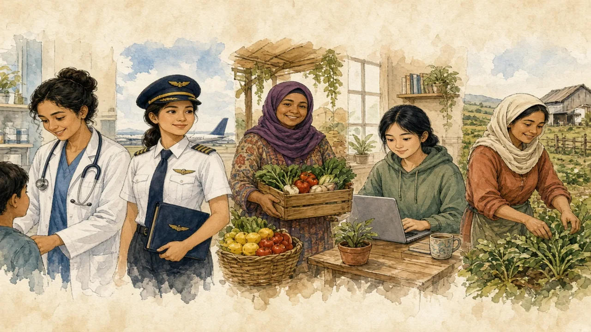

Laws, jobs and daily life differ widely from country to country — and so do the real challenges and the real achievements.
Middle East and North Africa · Women & society · Lesson 4 of 7
🌍 World map · ← Around the World: Middle East and North Africa · 🌱 Easier version (A2) · ← Guests, Tea and Dates: What Hospitality Really Means · More Than Fasting: What Ramadan Is Really Like →

Each new word is hidden in a sentence. Read it aloud and say what you think the bold word means from the rest of the sentence — then reveal it and see how close you were.
Read each part. After it, there's a quick comprehension check (try the questions from memory first), then one thing to discuss.
Laws about women vary greatly. Tunisia banned polygamy and gave women equal divorce rights in 1956, and Morocco reformed its family law in 2004. In Saudi Arabia, women were allowed to drive from 2018, and in 2019 women over 21 could get a passport and travel without a guardian's permission. At the same time, in Iran the law requires women to cover their hair in public, and many Iranian women have protested against it. In Turkey and Tunisia there is no such law. Generalising about “the Middle East” hides all of this.
1. What did Saudi Arabia allow in 2018?
2. Is the headscarf law the same in every country?
1. Women were allowed to drive.
2. No, it differs: required in Iran, not in Turkey or Tunisia.
In many countries of the region, women are now the majority of university students, and they study medicine, engineering and law. However, women's share of paid work is one of the lowest in the world — around one in five in many countries — which is partly due to law, partly to family expectations and partly to a lack of jobs. Women tend to be more visible in some professions, such as teaching, medicine and, increasingly, in business and science. The UAE decided in 2019 that half of its federal national council should be women.
1. What share of university students are women in many countries?
2. Is women's share of paid work high or low?
1. The majority.
2. Low — one of the lowest in the world.
Women in the region write, direct films, run companies, fly planes and lead campaigns. Many wear a headscarf by choice, many do not, and some feel pressure either way. Women activists, from Morocco to Iran, have often led the push for legal change, and they usually dislike being spoken for by outsiders. The best way to understand is to read, listen and watch what women in the region say about themselves.
1. What do women activists often dislike?
2. Do all women wear a headscarf?
1. Being spoken for by outsiders.
2. No. Some do by choice, many do not.
A stereotype and the reality rarely match. This lesson's grammar gives you the structure to describe the difference.
Complete each sentence about this topic.
1. Women study medicine in large numbers. (tend to)
2. , laws about women vary a lot from country to country. (Generally / All)
3. women wear a headscarf by choice, but not all. (Many / All)
1. tend to
2. Generally
3. Many
1. Families support daughters who want to study. (tend to / always)
2. women work outside the home, but the number is still low in some countries. (Some / All)
3. , the situation depends on the country, the city and the family. (In many cases / Never)
1. tend to
2. Some
3. In many cases
Hold on to this — you'll need it in the Speak tab.
The stereotype of a silent, covered woman has a long history in painting, film and news pictures, and it is a convenient image for people who want to simplify a complicated region. It is also used in political arguments that give little room to women themselves. The honest picture is uncomfortable in both directions: unfair laws and pressures are real in many places, and so are the achievements of women who study, earn, lead and argue in public. Both facts belong in the same sentence.
This is the heart of the lesson — do all of it out loud. The timer is there to keep you going: fill the time with detail rather than escaping it.
Explain why “all women in the region have the same life” is a stereotype, as if to a friend who read one article. Move through the arc: not one law, not one life → study, work and the gap → voices of their own.
Use today's grammar at least three times, and work in at least five key words (stereotype, legislation, guardianship, workforce, graduate, activist, headscarf, equality).
“Outsiders should not speak about women's rights in other countries.” Discuss.
Tell a story from your own world — work, family, the news — that connects to this topic. Stuck for an idea? Pick one of these and run with it:
🌍 World map · ← Around the World: Middle East and North Africa · 🌱 Easier version (A2) · ← Guests, Tea and Dates: What Hospitality Really Means · More Than Fasting: What Ramadan Is Really Like →